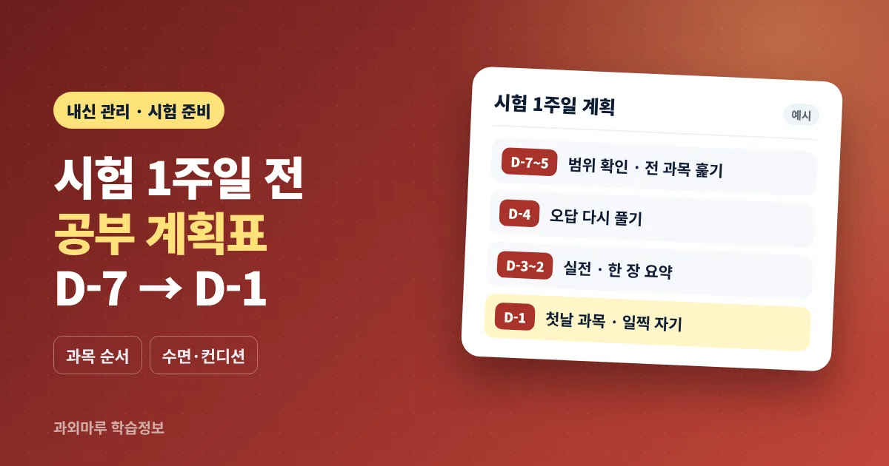

- 시험 1주일 전에는 범위 안 복습 · 오답 · 실전 연습 중심으로 계획
- 과목 순서는 시험 시간표 역순 + 약한 과목 먼저로 정하기
- 밤샘보다 시험 당일과 같은 기상 시간을 지키는 것이 컨디션 관리의 기본
시험 1주일 전에는 무엇을 해야 하나요?
시험 1주일 전에는 새 문제집을 시작하기보다 이미 공부한 범위를 다시 확인하고, 틀린 문제를 다시 풀고, 시간을 재고 풀어 보는 것에 집중하는 것이 좋습니다. 이 시기에는 무엇을 더할지보다 무엇을 줄일지를 먼저 정해야 계획이 지켜집니다.
여기서 D-7은 첫 시험일 7일 전을 뜻합니다. 기말고사 날짜와 과목별 시험 순서는 학교마다 다르므로, 계획을 짜기 전에 학교에서 받은 시험 시간표와 범위 안내를 책상 앞에 붙여 두는 것부터 시작합니다. 시험 4주 전부터의 큰 흐름은 중간·기말고사 4주 전 과목별 내신 준비 방법에 정리해 두었고, 이 글은 그중 마지막 1주에 해당합니다.
| 구분 | 1주일 전에 늘릴 것 | 1주일 전에 줄일 것 |
|---|---|---|
| 교재 | 교과서, 학교 학습지, 수업 필기 | 처음 보는 문제집, 범위 밖 심화 자료 |
| 문제 풀이 | 오답 다시 풀기, 시간 재고 풀기 | 쉬운 문제만 반복해서 많이 풀기 |
| 정리 | 한 장 요약, 자주 틀리는 개념 목록 | 노트를 처음부터 예쁘게 다시 쓰기 |
| 생활 | 같은 시간에 자고 일어나기, 아침 식사 | 밤샘, 늦은 시간 휴대전화 사용 |
수업에서 자주 보는 경우는 시험 직전에 불안해서 교재를 하나 더 사거나, 필기를 다시 옮겨 적는 데 시간을 많이 쓰는 경우입니다. 이 시기의 정리는 새로 만드는 것보다 이미 있는 자료에서 틀린 곳과 헷갈리는 곳만 골라 내는 쪽이 효율적입니다.
시험 기간 과목 순서는 어떻게 정하나요?
과목 순서는 시험 시간표를 거꾸로 놓고, 늦게 보는 과목을 먼저 크게 한 번 정리한 뒤 가까운 과목으로 좁혀 오는 방식이 기본입니다. 여기에 약한 과목과 배점이 큰 과목을 앞쪽에 배치합니다.
시험이 여러 날에 걸쳐 있으면 첫날 과목만 붙잡다가 마지막 날 과목을 거의 보지 못하는 일이 생깁니다. 그래서 D-7~D-5에는 모든 과목을 한 번씩 훑고, D-4부터 첫날 과목 비중을 높이는 식으로 나누는 것이 안전합니다. 과목은 공부 방식에 따라 아래처럼 나누어 보면 하루 계획에 섞기 쉽습니다.
| 과목 유형 | 예시 과목 | 1주일 전 공부 방법 | 배치 요령 |
|---|---|---|---|
| 풀이형 | 수학, 과학 계산 단원 | 오답 다시 풀기, 시간 재고 한 세트 풀기 | 집중력이 높은 시간대에 길게 |
| 이해·서술형 | 국어, 영어 | 본문 다시 읽기, 핵심 문장·요약 직접 쓰기 | 풀이형과 번갈아 배치 |
| 암기형 | 사회, 역사, 과학 개념, 기술·가정 등 | 백지에 떠올려 쓰기, 문제로 확인 | 짧게 여러 번, 잠들기 전 복습 |
과목을 나누는 기준은 학생마다 다를 수 있습니다. 같은 과학이라도 계산이 많은 단원은 풀이형, 용어가 많은 단원은 암기형으로 보는 식으로 단원별로 판단해도 됩니다. 수학 기말고사를 따로 준비한다면 중학생 기말고사 수학 4주 공부 순서를, 영어는 영어 내신 기말고사 준비법을 함께 참고해 주세요.
D-7부터 D-1까지 시험공부 계획표는 어떻게 짜나요?
D-7~D-5는 전 과목 점검, D-4~D-2는 시험 순서에 맞춘 집중 복습과 실전 연습, D-1은 첫날 과목 마무리와 준비물 점검으로 나누면 됩니다. 아래 표는 시험이 3일에 걸쳐 있는 경우를 가정한 예시입니다.
| 날짜 | 목표 | 할 일(예시) |
|---|---|---|
| D-7 | 범위·자료 최종 확인 | 과목별 범위와 자료 목록 대조, 빠진 학습지 챙기기, 계획표 작성 |
| D-6 | 전 과목 1회 훑기 | 마지막 날 과목부터 개념 확인, 헷갈리는 부분 표시 |
| D-5 | 전 과목 1회 훑기 | 남은 과목 개념 확인, 과목별 오답 목록 만들기 |
| D-4 | 오답 집중 | 표시한 문제 다시 풀기, 서술형 답안 직접 써 보기 |
| D-3 | 실전 연습 | 시험 시간에 맞춰 한 세트 풀기, 시간이 부족했던 유형 확인 |
| D-2 | 첫날·둘째 날 과목 집중 | 한 장 요약 만들기, 암기 과목 백지 테스트 |
| D-1 | 마무리·컨디션 | 첫날 과목 요약과 오답만 보기, 준비물 챙기기, 평소 시간에 잠들기 |
계획표에는 '수학 공부'처럼 과목만 적기보다 '수학 3단원 오답 12문제 다시 풀기(예시)'처럼 끝났는지 확인할 수 있는 단위로 적는 것이 좋습니다. 하루가 끝날 때 끝낸 칸에 표시하고, 못 한 것은 다음 날 맨 앞이 아니라 비어 있는 시간으로 옮깁니다. 못 한 것을 계속 앞으로 미루면 다음 날 계획 전체가 밀리기 때문입니다.
시험까지 1주일이 채 남지 않았다면 D-7~D-5 단계를 하루로 줄이고, 오답과 실전 연습을 우선합니다. 하루에 모든 과목을 넣기보다 하루 2~3과목 정도로 묶는 편이 실제로 지키기 쉽습니다.
시험 기간 하루 계획표 예시는 어떻게 되나요?
평일에는 하교 후 시간을 집중 블록 2~3개로 나누고, 주말에는 시험 시간에 맞춘 실전 연습을 넣는 방식이 무난합니다. 아래 시간은 모두 예시이므로 학원·수업 일정과 통학 시간에 맞춰 조정해 주세요.
평일 하루 계획표 (예시)
| 시간(예시) | 할 일 | 메모 |
|---|---|---|
| 하교 후 30분 | 간식, 휴식, 오늘 계획 확인 | 바로 휴대전화를 오래 보지 않기 |
| 블록 1 (60~80분) | 풀이형 과목 오답·실전 문제 | 가장 어려운 과목을 먼저 |
| 저녁 식사 | 식사와 짧은 산책 | 책상에서 벗어나기 |
| 블록 2 (60분) | 국어·영어 본문, 서술형 쓰기 | 소리 내어 읽거나 직접 쓰기 |
| 블록 3 (30~40분) | 암기 과목 백지 테스트 | 잠들기 전 짧게 |
| 마무리 10분 | 체크 표시, 내일 할 일 적기 | 평소 시간에 잠자리에 들기 |
주말 하루 계획표 (예시)
- 오전 — 시험 시작 시각에 맞춰 일어나 1교시 과목을 실제 시험 시간만큼 풀어 봅니다.
- 오후 — 오전에 틀린 문제를 정리하고, 다른 과목 한 세트를 풉니다.
- 저녁 — 암기 과목을 백지 테스트로 확인하고, 다음 날 계획을 적습니다.
블록 사이에는 짧은 휴식을 넣는 것이 좋습니다. 집중 시간은 학생마다 차이가 커서, 처음에는 40분 정도로 시작해 지켜지는지 확인하며 늘려 가는 편이 현실적입니다. 시험공부 계획표는 많이 적는 것보다 매일 끝까지 지킬 수 있는 양으로 적는 것이 중요합니다.
시험 기간 수면과 컨디션은 어떻게 관리하나요?
시험 기간일수록 밤샘을 피하고, 시험 당일과 같은 시간에 일어나는 습관을 1주일 전부터 맞추는 것이 좋습니다. 아침 식사도 시험 날 먹을 수 있는 메뉴로 미리 익숙하게 해 둡니다.
질병관리청이 발표한 청소년건강행태조사 2025년 주요결과에 따르면, 조사 대상 학생의 주중 평균 수면시간은 남학생 6.6시간, 여학생 5.9시간이었습니다. 잠을 충분히 잤다고 느끼는 주관적 수면충족률은 남학생 28.3%, 여학생 16.9%였고, 주 5일 이상 아침을 거르는 아침식사 결식률은 남학생 41.9%, 여학생 45.3%로 조사되었습니다. 평소에도 잠과 아침 식사가 부족한 학생이 많은 만큼, 시험 기간에 잠을 더 줄이기보다 지금의 리듬을 무너뜨리지 않는 것이 먼저입니다.
- 기상 시간 고정 — 시험 날 일어날 시간에 1주일 전부터 맞춰 일어납니다. 주말에도 크게 늦추지 않습니다.
- 밤샘 피하기 — 늦게까지 공부한 다음 날 오전에 집중이 떨어지면 계획 전체가 흔들립니다. 남은 분량은 다음 날 계획으로 옮깁니다.
- 잠들기 전 화면 줄이기 — 잠자리에 들기 전에는 휴대전화나 태블릿 사용을 줄이고, 짧은 암기 복습으로 하루를 마무리합니다.
- 아침 식사 — 시험 날 처음 먹어 보는 음식보다 평소 먹던 간단한 식사가 부담이 적습니다.
- 카페인 음료 주의 — 평소 마시지 않던 에너지 음료를 시험 기간에 갑자기 마시지 않도록 합니다.
컨디션이 크게 나쁘거나 몸이 아프면 무리해서 계획을 지키기보다 쉬는 것이 먼저이며, 증상이 계속되면 의료기관 상담을 받아 주세요. 시험 당일 결시나 질병 처리 기준은 학교 학업성적관리규정에 따르므로 학교에 먼저 문의하는 것이 좋습니다.
시험 기간 중 시험이 끝난 날에는 무엇을 하나요?
시험이 끝난 날에는 본 과목의 채점과 후회는 짧게 하고, 다음 날 과목 준비로 바로 넘어가는 것이 좋습니다. 틀린 문제의 자세한 분석은 모든 시험이 끝난 뒤에 해도 늦지 않습니다.
- 집에 오면 점심과 짧은 휴식을 먼저 합니다(30분~1시간 정도).
- 다음 날 과목의 한 장 요약과 오답 목록을 봅니다.
- 다음 날 과목 중 암기 비중이 큰 과목은 백지 테스트로 확인합니다.
- 저녁에는 준비물과 시험 시간표를 다시 확인하고 평소 시간에 잡니다.
수업에서 자주 보는 경우는 첫날 시험이 기대보다 어려웠을 때 답을 맞춰 보느라 오후 시간을 대부분 쓰는 경우입니다. 이미 끝난 과목은 시험이 모두 끝난 뒤 분석하는 시간을 따로 잡는 편이 남은 과목에 도움이 됩니다. 시험이 끝난 뒤의 결과 분석과 오답 정리 방법은 중간고사 끝난 뒤 2주, 시험 결과 분석과 오답 정리법에서 볼 수 있습니다.
학부모는 내신대비 마지막 1주일에 무엇을 도와주면 좋을까요?
학부모는 공부 내용을 직접 점검하기보다 계획표가 있는지, 잠자는 시간이 지켜지는지, 준비물과 시험 시간표를 챙겼는지를 확인해 주시는 것이 도움이 됩니다. 내신대비 마지막 1주일에는 잔소리를 늘리기보다 생활 리듬을 지켜 주는 역할이 큽니다.
- 과목별 시험 범위와 시험 시간표를 아이와 함께 한 번 확인했나요?
- D-7부터 D-1까지 계획표가 '끝났는지 확인할 수 있는 단위'로 적혀 있나요?
- 평일 잠자리에 드는 시간과 일어나는 시간이 일정한가요?
- 아침 식사를 할 수 있도록 시간과 메뉴를 준비했나요?
- 시험 전날 필기구, 수정테이프, 시계 등 학교에서 안내한 준비물을 챙겼나요?
- 시험이 끝난 날 결과를 묻기보다 다음 과목 준비를 응원했나요?
중학생과 고등학생은 시험 과목 수와 범위의 양이 달라 계획표의 밀도도 달라집니다. 학년별 성적 산출 방식과 준비 범위는 학교 안내를 기준으로 조정해 주세요. 1:1 수업에서는 일반적으로 시험 1주일 전에는 학교 자료와 지난 오답을 기준으로 남은 날짜에 맞춰 과목 순서를 함께 정하는 방식으로 진행하는 경우가 많습니다.
자주 묻는 질문
시험 일주일 전에는 무엇을 해야 하나요?
새 문제집을 시작하기보다 이미 공부한 범위를 다시 확인하고, 틀린 문제를 다시 풀고, 시험 시간에 맞춰 풀어 보는 데 집중하는 것이 좋습니다. 시험 시간표와 범위 안내를 먼저 확인한 뒤 D-7부터 D-1까지 할 일을 나누어 적어 보세요.
시험공부 계획표는 어떻게 쓰면 지키기 쉬운가요?
과목 이름만 적기보다 단원과 문제 수처럼 끝났는지 확인할 수 있는 단위로 적습니다. 하루 2~3과목 정도로 묶고, 못 한 분량은 다음 날 맨 앞이 아니라 빈 시간으로 옮기면 계획이 덜 밀립니다.
시험 기간 과목 순서는 어떻게 정하나요?
시험 시간표를 거꾸로 놓고 늦게 보는 과목부터 한 번 정리한 뒤, 시험이 가까워질수록 첫날 과목 비중을 높입니다. 약한 과목과 배점이 큰 과목은 앞쪽에 배치하고, 풀이형과 암기형 과목을 번갈아 넣으면 집중을 유지하기 쉽습니다.
시험 전날 밤을 새워 공부해도 괜찮을까요?
밤샘은 다음 날 오전 집중력을 떨어뜨릴 수 있어 권하지 않습니다. 시험 전날에는 첫날 과목의 요약과 오답만 보고 평소 시간에 잠자리에 드는 편이 좋습니다. 1주일 전부터 시험 날과 같은 시간에 일어나는 연습을 해 두면 도움이 됩니다.
시험이 끝난 날 바로 채점하고 오답 정리를 해야 하나요?
시험 기간 중에는 끝난 과목의 채점은 짧게 하고 다음 날 과목 준비를 먼저 하는 것이 좋습니다. 틀린 이유의 자세한 분석과 오답 정리는 모든 시험이 끝난 뒤 시간을 따로 잡아 하는 편이 남은 과목에 도움이 됩니다.
참고 자료
- 질병관리청, 「청소년건강행태조사 2025년 주요결과 발표 (보도자료, 2025.12.)」 — https://www.kdca.go.kr/bbs/kdca/42/215505/artclView.do
이 글은 일반적인 참고 정보이며, 시험 일정과 범위, 시험 과목 순서, 결시 처리 기준은 학교마다 다를 수 있으니 학교 안내를 확인해 주세요. 계획표의 시간과 분량은 모두 예시입니다.
학년과 과목, 현재 상황을 남겨주시면 상담 내용을 확인해 안내드립니다.